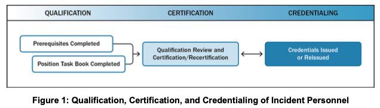

제2장 자원 관리 (II. Resource Management)
참고 원문: National Incident Management System (Third Edition, October 2017) - Chapter II (pp. 6–18)
작성 원칙: GEMINI.md의 연구자료(SUB-NOTE) 사용 10대 기본 원칙에 입각하여 원문의 단락, 도표(Figure 1, Figure 2), 인셋 박스, 각주(Footnotes 6~8)를 단 하나의 누락이나 임의 왜곡 없이 100% 충실하게 정리하고 주요 학술·실무 개념에 영문을 병기함. 원문 연구 결과(제1절~제4절)와 연구자의 비교·해석(제5절~제7절)은 엄격히 분리함.
1. 개요 (Introduction to Resource Management) (원문 p. 6)
1.1 기본 개념 및 배경 (원문 p. 6)
- 협력과 조정의 프레임워크: 자원 관리(Resource management) 지침은 다수의 조직에 속한 인력들이 함께 협력하여 인력(Personnel), 팀(Teams), 시설(Facilities), 장비(Equipment), 보급품(Supplies)과 같은 사건 자원을 조정하고 관리할 수 있게 하는 메커니즘을 제공함.
- 자원 보유의 한계: 대부분의 관할구역이나 조직은 잠재적인 모든 위협과 위험(All potential threats and hazards)에 대응할 만큼 충분한 자원을 단독으로 보유하고 유지할 수 없음.
- 효과적 자원 관리의 핵심 축: 따라서 효과적인 자원 관리에는 다음 4가지가 포함됨:
- 각 관할구역의 자체 자원 활용(Leveraging each jurisdiction's resources)
- 민간 부문 자원 참여 유도(Engaging private sector resources)
- 자원봉사 조직 참여(Involving volunteer organizations)
- 효과적인 상호응원 협약(Mutual aid agreements)의 개발을 장려하는 것
1.2 제2장의 3대 구성 체계 (원문 p. 6)
본 장은 다음의 3대 핵심 절로 구성됨:
- A. 자원관리 대비태세 (Resource Management Preparedness): 자원을 식별 및 유형화(Typing)하고, 인력을 자격부여·인증·크레덴셜링하며, 자원을 계획하고, 자원을 획득·저장·목록화(Inventorying)하는 사전 준비 활동.
- B. 사건 진행 중 자원관리 (Resource Management During an Incident): 사건에 대응하여 자원을 활성화, 파견, 추적, 동원 해제, 재보충하는 방법.
- C. 상호응원 (Mutual Aid): 관할구역들이 사건 시 상호 지원을 위해 협약을 체결하고 함께 협력하는 방법.
2. A. 자원관리 대비태세 (Resource Management Preparedness) (원문 pp. 6–11)
자원관리 대비태세는 다음의 4가지 핵심 활동으로 구성됨: 자원 식별 및 유형화(Identifying and typing resources); 인력 자격부여, 인증 및 크레덴셜링(Qualifying, certifying, and credentialing personnel); 자원 계획 수립(Planning for resources); 자원 획득, 저장 및 목록화(Acquiring, storing, and inventorying resources).
┌────────────────────────────────────────────────────────────────────────┐
│ 자원관리 대비태세 4대 핵심 활동 (Preparedness) │
└───────────────────────────────────┬────────────────────────────────────┘
│
┌───────────────────────────────┼───────────────────────────────┐
▼ ▼ ▼
┌─────────────────────────┐ ┌─────────────────────────┐ ┌─────────────────────────┐
│ 1. 자원 식별 및 유형화 │ │ 2. 인력 자격·인증·증명 │ │ 3. 자원 소요 계획 │
│ (Identifying & Typing) │ │ (Qualify/Cert/Credential)│ │ (Planning Resources) │
├─────────────────────────┤ ├─────────────────────────┤ ├─────────────────────────┤
│• 4대 속성 정의 │ │• AHJ 중심 거버넌스 │ │• 위협/취약성 기반 소요│
│• 핵심 역량 기반 분류 │ │• 직무수행서(PTB) 완수 │ │• 역량 추정(Capability)│
│• RTLT 카탈로그 활용 │ │• 성능 기반 평가 체계 │ │• 비축 vs 적시조달 전략│
└─────────────────────────┘ └─────────────────────────┘ └─────────────────────────┘
│
▼
┌─────────────────────────┐
│ 4. 획득·저장·목록화 │
│(Acquire/Store/Inventory)│
├─────────────────────────┤
│• 13개 필수 인벤토리 필드│
│• IT 기반 실시간 상태관리│
│• 중복 계상(오차) 방지 │
└─────────────────────────┘2.1 자원 식별 및 유형화 (Identifying and Typing Resources) (원문 pp. 6–7)
(1) 자원 유형화(Resource Typing)의 정의와 목적 (원문 p. 6)
- 정의: 사건 자원을 역량(Capability)에 따라 표준적으로 정의하고 범주화(Defining and categorizing)하는 작업.
- 목적:
- 사건 시 자원 동원을 위한 공통 언어(Common language)를 확립함.
- 인력, 팀, 시설, 장비, 보급품에 대한 기본 역량(Baseline capabilities)을 정의함.
- 자원을 요청하는 지역사회가 요청한 역량을 제공하는 자원을 식별하고 수령하며, 그 자원을 효과적으로 통합할 수 있도록 지원함.
(2) FEMA의 역할 및 전국 표준 자원 선정 기준 (원문 pp. 6–7)
연방재난관리청(FEMA)은 지방, 주, 부족, 준주, 도서 지역 및 연방 차원에서 공유되는 자원에 대한 자원 유형화 정의(Resource typing definitions)의 개발 및 유지를 선도함. 전국적 차원에서 다음 기준을 충족하는 자원이 유형화 대상으로 선정됨:
- 널리 사용되고 공유 가능한 자원(Widely used and sharable);
- 상호응원 협약을 통해 관할구역 간 공유될 수 있는 자원;
- 다음 4가지 특성(Characteristics)으로 식별 가능한 자원:
- 역량 (Capability): 해당 자원이 가장 유용하게 기여하는 핵심 역량(Core capability) (각주 6 참조);
- 범주 (Category): 자원이 가장 유용하게 사용되는 기능 또는 임무 영역(예: 소방, 법집행, 보건의료, 수색구조 등);
- 종류 (Kind): 장비, 인력, 팀, 시설, 보급품 등 자원에 대한 넓은 의미의 분류(Broad characterization);
- 유형 (Type): 자원의 최소 역량 수준(Level of minimum capability).
- 가용성 판단을 위해 식별, 목록화, 추적이 가능한 자원;
- ICS 및/또는 EOC에서 지휘, 지원 또는 조정을 위해 사용되는 자원;
- 공통의 주문, 관리, 추적 시스템을 통해 배치될 수 있을 만큼 충분히 상호운용 가능한(Sufficiently interoperable) 자원.
📌 [원문 인셋 박스] 자원의 유형(Type) 등급 체계 및 측정 지표 (원문 p. 7)
- 역량의 서열: 자원 유형화 정의는 Type 1(최고 역량, Highest capability)부터 Type 4(최저 역량, Lowest capability)까지 자원의 역량을 범주화함 (Type 1 > Type 2 > Type 3 > Type 4).
- 역량 측정 기준:
- 장비(Equipment): 크기(Size), 동력(Power), 용량(Capacity) 등의 측정치 (예: 이동식 조리 트레일러의 시간당 급식 생산량 또는 덤프트럭의 적재 용량).
- 인력 및 팀(Personnel and Teams): 경험(Experience), 훈련(Training), 자격(Qualifications) 수준.
- 로컬 자원 유형화: 관할구역은 지역 내에서의 자원 공유를 용이하게 하기 위해 자체 자원에 대한 유형화 정의를 개발하거나 수정할 수 있으나, 이러한 지역적 유형화 정의는 NIMS 자원 유형화 개념 및 프로세스와 일관성을 유지해야 함.
(3) 자원 유형화 라이브러리 도구 (Resource Typing Library Tool, RTLT) (원문 p. 7)
- FEMA가 운영하는 온라인 카탈로그 시스템 (
http://www.fema.gov/resource-management-mutual-aid). - 모든 NIMS 자원 유형화 정의 및 직무 명칭/보직 자격(Job titles/position qualifications)에 대한 권위 있는 최신 정보를 제공하며, 자원 유형, 전문 분야(Discipline), 핵심 역량, 또는 키워드로 검색 가능함.
📌 [원문 각주 6 전수 번역 및 해설 (Footnote 6, p. 6)]
- 각주 6 (핵심 역량[Core Capabilities], p. 6): 국가대비목표(National Preparedness Goal)에서 식별된 핵심 역량(Core capabilities)은 미국이 가장 큰 국가적 위험으로 인해 발생하는 구체적인 과제를 다루기 위해 사용하는 5대 임무 영역(예방, 보호, 완화, 대응, 복구) 전반에 걸친 구별되고 핵심적인 요소들임.
2.2 인력의 자격부여, 인증, 크레덴셜링 (Qualifying, Certifying, and Credentialing Personnel) (원문 pp. 7–8)
관할권한보유기관(AHJ)이 주도하는 인력의 자격부여, 인증, 크레덴셜링은 전국의 인력이 사건 중 자신의 직무를 성공적으로 수행할 수 있는 지식, 경험, 훈련, 역량을 보유하도록 보장하는 필수적인 3단계 프로세스임.
[ NIMS 인력 자격검증 및 신원증명 3단계 프로세스 ]
┌────────────────────────┐ ┌────────────────────────┐ ┌────────────────────────┐
│ 1. 자격부여 │ │ 2. 인증 / 재인증 │ │ 3. 크레덴셜링 │
│ (Qualification) │ ───> │ (Certification) │ <──> │ (Credentialing) │
├────────────────────────┤ ├────────────────────────┤ ├────────────────────────┤
│• 사전 필수요건 이수 │ │• AHJ의 공식 심사 │ │• 신분증/배지 발급 │
│ (선수과목, 신체검사) │ │• 직위 적격성 인정 │ │• 직위 및 자격 명시 │
│• 직무수행서(PTB) 완수 │ │• 주기적 재인증(갱신) │ │• 전국 상호인정 근거 │
└────────────────────────┘ └────────────────────────┘ └────────────────────────┘- 자격부여 (Qualification):
- 개인이 직위의 최소 기준을 충족하는 프로세스. 이 기준에는 훈련, 경험, 신체적·의학적 적합성(Physical and medical fitness), 그리고 역량이 포함됨.
- 인증 / 재인증 (Certification / Recertification):
- AHJ 또는 제3자 기관 (각주 7 참조)을 통해 개인이 수립된 직위 기준을 충족하고 직무를 수행할 자격이 있음을 인정하는 과정.
- 크레덴셜링 (Credentialing):
- AHJ가 개인의 신원을 확인하고 지정된 사건 관리 역할에서 일할 수 있는 자격을 보유하고 있음을 검증하는 문서—일반적으로 신분증 카드(Identification card) 또는 배지(Badge)—를 제공하는 경우에 발생함.
- ⚠️ 중요 구별 (크레덴셜링 vs 사건별 현장 출입 배징): 크레덴셜링은 사건 현장에서 자격을 검증하고 사건 구역 출입 및 특정 역할 배정을 승인하는 사건별 현장 배지 발급 프로세스(Incident-specific badging process)와는 구별됨.
Figure 1 상세 분석: 직무수행서(PTB) 기반 자격 검증 체계 (원문 p. 8)

원문의 Figure 1: Qualification, Certification, and Credentialing of Incident Personnel은 인력 자격부여에 대한 성능 기반 접근법(Performance-based approach)을 제시함.
- 직무수행서 (Position Task Book, PTB):
- 이 접근법에서 후보자는 해당 보직에 대한 모든 선수 요건(Prerequisites)을 이수한 후, 표준화된 직무수행서(PTB)에 명시된 최소한의 과업과 행동을 실제로 시연해야 함.
- PTB는 후보자가 해당 보직을 인증받기 위해 반드시 실증해야 하는 역량, 행동, 과업들을 기술함.
- AHJ의 절대적 권한과 유연성:
- FEMA는 미 전역에서 공유되는 주요 보직에 대해 최소 자격 요건과 권장 PTB를 개발하지만, 실제 직위 자격 요건을 수립·집행하고 인력을 자격부여·인증·크레덴셜링할 권한과 책임은 관할권한보유기관(AHJ)에 있음.
- AHJ는 NIMS가 제시하는 기준보다 더 높은 수준의 추가 요건을 채택할 수 있음.
📌 [원문 각주 7 전수 번역 및 해설 (Footnote 7, p. 7)]
- 각주 7 (제3자 인증[Third-Party Certification], p. 7): 제3자 인증은 특히 공중보건 및 의료 인력(Public health and medical personnel)에게 관련성이 높으며, 여기에는 주 면허위원회(State licensing boards) 또는 전문 인증 기관(Board certification entities)에 의한 면허 부여가 포함될 수 있음.
2.3 자원 소요 계획 (Planning for Resources) (원문 pp. 8–9)
관할구역과 조직은 예방, 보호, 완화, 대응, 복구 등 모든 임무 영역 (각주 8 참조)에서 위협과 취약성에 기반하여 자원 소요를 추정하기 위해 협력해야 함.
(1) 자원 확보의 4대 전략과 유의점 (원문 p. 8)
관할구역과 조직은 다음을 포함한 다양한 전략을 고려해야 함:
- 자원 비축 (Stockpiling resources): 사건 전 자원을 비축하는 것은 필요 시 가용성을 보장하지만, 유효기간(Shelf life)과 유지보수 비용 등 추가적인 부담을 수반함.
- 상호응원 협약 수립 (Establishing mutual aid agreements): 인접 또는 타 관할구역으로부터 자원을 획득함.
- 비필수 활동에 배정된 자원의 재배치 결정 (Determining how and where to reassign resources assigned to non-essential activities): 일상 업무 자원을 비상 업무로 전환함.
- 벤더와의 사전 계약 개발 (Developing contracts with vendors): 비축하지 않는 품목이나 추가 공급이 필요한 품목을 사건 발생 시 신속히 납품받기 위해 공급업체와 계약을 체결함.
- ⚠️ 주의 (동일 벤더 중복 의존의 함정): 다수의 조직이 동일한 자원 공급업체(Vendor)와 계약을 맺을 때 문제가 발생할 수 있음(예: 한 도시의 모든 병원이 대유행 시 개인보호장구[PPE] 부족분을 메우기 위해 동일한 공급업체와 계약하는 경우).
- 기부 물품 및 현금 관리: 계획 수립 시에는 요청 여부와 무관하게 답지하는 기부 물품 및 기부금(Solicited and unsolicited donations)을 관리하기 위한 프로토콜도 포함해야 함.
(2) 역량 추정 (Capability Estimation) 및 사전배치 (원문 pp. 8–9)
- 역량 추정(Capability estimation): 관할구역의 역량과 자원 배치의 잠재적 효과를 평가하는 핵심 계획 프로세스로, 다음 3가지 질문에 답함:
- 우리는 무엇에 대비해야 하는가? (What do we need to prepare for?)
- 목표를 달성하기 위해 우리는 어떤 자원을 보유하고 있는가? (What resources do we have that allow us to achieve our targets?)
- 어떠한 격차(Gaps)를 해소하기 위해 상호응원을 통해 어떤 자원을 획득할 수 있는가? (What resources can we obtain through mutual aid to address any gaps?)
- 사전배치(Pre-positioning) 및 급증 수요(Surge Needs) 관리: 계획가들은 비축 위치, 사전배치 자원, 재고 보충 트리거(Triggers for reordering), 급증 수요, 비축 불가능 품목의 조달 절차 등을 사전에 통합해야 함.
📌 [원문 각주 8 전수 번역 및 해설 (Footnote 8, p. 8)]
- 각주 8 (5대 임무 영역[Five Mission Areas], p. 8): 예방(Prevention), 보호(Protection), 완화(Mitigation), 대응(Response), 복구(Recovery).
2.4 자원 획득, 저장, 목록화 (Acquiring, Storing, and Inventorying Resources) (원문 pp. 9–11)
(1) 자원 획득·저장 관리 요소 및 인벤토리 vs 자원 추적의 구분 (원문 p. 9)
- 자원 비축 및 유지보수 관리 (원문 p. 9 제1~2문단 보완): 조직은 평상시 운영을 지원하고 비축분(Stockpiles)을 구축하기 위해 자원을 획득, 저장, 목록화함. 효과적인 자원 관리 절차는 주기적인 보충(Periodic replenishments), 예방 정비(Preventive maintenance), 자본 개선(Capital improvements)을 반영하고, 조달 리드타임과 유효기간(Shelf life)을 고려하며, 최소 재고 기준선 도달 시 재주문을 실행하는 트리거를 설정해야 함. 또한 계획가들은 대형 또는 복합 자원(Large or complex resources)을 운용하는 데 필요한 부수적 지원, 보급품, 공간(Ancillary support, supplies, or space)도 반드시 고려해야 함.
- 인벤토리(Inventorying) vs 자원 추적(Resource Tracking):
- 자원 목록화(Resource inventorying): 사건 대응 외부(평시)에서 자원 가용성을 파악하고 관리하는 대비 활동.
- 자원 추적(Resource tracking): 사건 발생 중(비상시)에 배치된 자원의 위치와 상태를 관리하는 운영 활동.
- 평시 행정 지원: 효과적인 자원 목록화는 상호응원을 촉진할 뿐만 아니라 일상적인 대사(Reconciliation), 회계(Accounting), 감사(Auditing) 업무를 지원함.
(2) 효과적인 자원 인벤토리의 13대 필수 정보 항목 (원문 pp. 9–11)
NIMS는 자원 인벤토리에 단순 수량뿐 아니라 다음의 13가지 항목(Fields)을 포함할 것을 규정함:
| 번호 | 필수 정보 필드 | 세부 설명 및 NIMS 기준 (원문 pp. 9–10) |
|---|---|---|
| 1 | 이름 (Name) | 자원의 고유 명칭 또는 인간 식별자(Unique name or human identifier) |
| 2 | 별칭 (Aliases) | 무전 호출부호(Radio call sign)나 대안 명칭 등 원래 이름으로 알려지지 않았을 때 사용할 수 있는 식별자 |
| 3 | 상태 (Status) | 자원의 현재 상태 (예: 정비 중 등 가용성에 영향을 주는 상태) |
| 4 | 유형 정의 또는 직무 명칭 (Resource Typing Definition or Job Title) | 자원을 가장 잘 설명하는 NIMS 자원 유형화 정의 또는 직무 명칭(비유형화 자원은 로컬 설명 사용) |
| 5 | 상호응원 준비도 (Mutual Aid Readiness) | 상호응원을 통한 파견 준비 상태 및 가용 여부 |
| 6 | 본적지 (Home Location) | 자원의 상시 보관 위치(시설 명칭, 주소, 위도/경도 및 미국국가지리격자[USNG] 좌표 포함) |
| 7 | 현재 위치 (Present Location) | 자원의 현재 위치(주소, 위도/경도 및 USNG 좌표 포함; GIS 연동 가능) |
| 8 | 담당 연락책 (Point of Contact) | 자원의 파견 가능 여부와 상태를 알고 있는 담당자의 연락처 |
| 9 | 소유자 (Owner) | 자원을 소유한 기관 또는 개인 |
| 10 | 제조사/모델 (Manufacturer/Model) | 제조사, 모델명, 공식 일련번호(Serial number) |
| 11 | 계약 (Contracts) | 구매, 리스, 대여, 유지보수 계약 및 관련 재무 약정 |
| 12 | 인증 (Certifications) | 관련 인증서 및 자격 증명서 |
| 13 | 파견 정보 (Deployment Information) | • 최소 리드타임(Minimum Lead Time): 자원이 파견 준비를 갖추는 데 필요한 최소 시간(시간 단위) • 최대 파견 기간(Maximum Deployment Time): 자원이 파견될 수 있는 최대 기간(일 단위) • 제한 및 제약사항(Restrictions/Limitations): 자원 사용에 영향을 미치는 제한 사항 • 비용 상환(Reimbursement): 적용 가능한 비용 상환 프로세스 • 해제 및 복귀 지침(Release and Return Instructions): 해제 및 반환 절차 • 지속유지 소요(Sustainability Needs): 자원을 계속 가동하기 위해 필요한 조건 • 맞춤형 속성(Custom Attributes): 기타 자원 고유 속성 |
- ⚠️ 중복 계상(Double-Counting) 방지 (원문 p. 11): 인력을 목록화할 때 다수의 직위에 자격을 갖춘 개인이나 여러 조직(예: 소방서와 자원봉사단)에 동시에 소속된 개인이 중복 계상되어 가용 인력이 과대평가되지 않도록 철저히 관리해야 함.
3. B. 사건 진행 중 자원관리 (Resource Management During an Incident) (원문 pp. 11–16)
사건 중 자원관리 프로세스(Figure 2: Resource Management Process)는 6단계 순환 구조로 이루어짐: ① 요구사항 식별(Identify Requirements) → ② 주문 및 획득(Order and Acquire) → ③ 동원(Mobilize) → ④ 추적 및 보고(Track and Report) → ⑤ 동원 해제(Demobilize) → ⑥ 비용상환 및 재보충(Reimburse and Restock).
[ Figure 2: 사건 대응 중 자원관리 6대 프로세스 순환도 (원문 p. 11) ]
┌────────────────────────────────────────┐
┌────>│ 1. 요구사항 식별 (Identify Req.) │
│ └───────────────────┬────────────────────┘
│ ▼
│ ┌────────────────────────────────────────┐
│ │ 2. 주문 및 획득 (Order & Acquire) │
│ └───────────────────┬────────────────────┘
│ ▼
│ ┌────────────────────────────────────────┐
│ │ 3. 동원 (Mobilize) │
│ └───────────────────┬────────────────────┘
│ ▼
│ ┌────────────────────────────────────────┐
│ │ 4. 추적 및 보고 (Track & Report) │
│ └───────────────────┬────────────────────┘
│ ▼
│ ┌────────────────────────────────────────┐
│ │ 5. 동원 해제 (Demobilize) │
│ └───────────────────┬────────────────────┘
│ ▼
│ ┌────────────────────────────────────────┐
└─────┤ 6. 비용상환 및 재보충 (Reimburse) │
└────────────────────────────────────────┘3.1 단계별 핵심 과업 심층 분석 (원문 pp. 11–16)
(1) 제1단계: 요구사항 식별 (Identify Requirements) (원문 pp. 11–12)
- 사건 관리 인력은 필요한 자원의 종류와 수량, 자원이 필요한 위치, 자원을 수령하고 배치할 책임자를 식별하고 지속적으로 정교화함.
- 자원 가용성과 소요는 사건이 진전됨에 따라 끊임없이 변하므로, 지휘 조직과 지원 조직은 사건 초기부터 가능한 한 긴밀하게 조율해야 함.
(2) 제2단계: 주문 및 획득 (Order and Acquire) (원문 pp. 12–13)
- 발주 주체 및 경로: 현장지휘체계(ICS) 조직과 긴급운영센터(EOC) 인력이 모두 자원을 주문할 수 있으며, 정책·절차·상호응원 협약에 따라 발주함. 자체 보유분으로 충족할 수 없는 경우 인접 관할구역, 상위 정부, 민간 벤더 등에 요청함.
- 자원 요청서(Resource Requests)의 4대 필수 기재 항목 (원문 p. 12):
- 필요한 품목과 수량, 종류(Kind), 유형(Type)에 대한 상세 설명(NIMS 자원 유형화 정의나 직무 명칭이 없는 경우 상세 사양 및 적합한 대체재[Substitutes] 명시);
- 요구 도착 일시(Required arrival date and time) 및 보고 위치(Reporting location);
- 자원이 보고해야 할 직위의 명칭(Position title to which the resource should report);
- 사건 특유의 보건 또는 안전 우려사항(예: 이동식 주택의 오염, 예방접종 요건 등).
- 관할권 밖 활동 시 법적 제한 검토: 법집행관(Law enforcement officers)이나 응급의료 인력(Emergency medical personnel)과 같이 관할구역 밖에서 법적 권한이나 면허 제한을 받는 인력을 요청할 때는 사전에 관련 법률·정책·상호응원 협약을 검토해야 함.
⛔ [원문 인셋 박스] 요청되지 않은 자원 / 자진 출동 (Unrequested Resources / Self-Dispatching) (원문 p. 13)
사건 중에는 대응요원들이 때때로 독자적으로 사건 현장으로 몰려들기도 함(Self-dispatching). 공식적인 요청과 파견 없이 현장에 도착하는 이러한 자원들은 사건 관리 노력을 방해하며 다음과 같은 심각한 문제를 야기함:
- 추가적인 감독(Supervisory) 및 군수 지원(Logistical support) 부담 창출;
- 자진 출동한 대원의 본래 소속 지역사회(Home community)의 자원 고갈;
- 자원 추적 및 대원 안전·책무성(Accountability) 확보의 복잡성 가중;
- 사건 현장 접근로 차단(Interfering with access to the incident site).
➜ 원칙: 대응요원들은 관할 당국이 확립된 자원 관리 시스템을 통해 공식적으로 요청하고 파견할 때까지 기다려야 함.
(3) 제3단계: 동원 (Mobilize) (원문 pp. 14–15)
- 동원 통보 시 대원에게 전달해야 할 9대 핵심 정보 (원문 p. 14):
인력과 기타 자원은 권한 있는 당국으로부터 동원 통보를 받는 즉시 동원을 시작하며, 통보 시에는 다음 정보가 포함되어야 함:
① 출발 일시 및 장소(Date, time, and place of departure); ② 이동 수단(Mode of transportation to the incident); ③ 사건 현장 도착 예정 일시(Estimated date and time of arrival); ④ 보고 장소(Reporting location: 주소, 보직 명칭, 전화번호 또는 무전 주파수); ⑤ 예상 사건 보직/임무(Anticipated incident assignment); ⑥ 예상 파견 기간(Anticipated duration of deployment); ⑦ 자원 주문 번호(Resource order number); ⑧ 사건 번호(Incident number); ⑨ 적용 가능한 비용 코드(Applicable cost or funding code). - 동원 프로세스의 5대 핵심 요소 (원문 p. 15 제1문단 원문 보완):
동원 프로세스에는 다음 5가지 과업이 포함됨:- 사건 맞춤형 파견 계획 수립 (Conducting incident-specific deployment planning);
- 장비 지급 및 무장 (Equipping);
- 적시 교육·훈련 제공 (Providing just-in-time training);
- 집결지 지정 (Designating assembly points);
- 일정, 우선순위 및 예산에 맞추어 사건 현장에 자원 전달 (Delivering resources to the incident on schedule and in line with priorities and budgets).
- 고정 시설 자원: 긴급 대피소, 병원, 중증외상센터, 검사실 등 고정 시설 자원의 경우 동원이 아닌 활성화(Activation) 프로세스를 거침.
- 동원 해제 계획의 동시 착수: 관리자는 자원의 효율적인 회수·책무성·원상복구를 보장하기 위해 동원 프로세스와 동시에 동원 해제(Demobilization)를 계획하고 준비해야 함.
- 비전통적 자원(생존자 및 민간·NGO)의 통합 (원문 p. 15):
- 자원으로서의 생존자(Survivors as Resources): 사건 발생 직후(Immediate aftermath)에는 생존자들과 이웃들이 구조 활동을 주도하게 됨. 사건 관리 계획가들은 이러한 즉흥적 자원봉사자(Spontaneous volunteers)들의 노력을 예상하고 위험을 최소화하면서 사건 관리 구조 내에 안전하게 통합할 계획을 수립해야 함.
- 비정부기구(NGO): 미국적십자사(American Red Cross), 구호봉사단체연합(VOAD), 의료예비군(Medical Reserve Corps) 등 확립된 NGO를 통해 자원봉사자를 통합하는 것이 가장 효과적임.
(4) 제4단계: 추적 및 보고 (Track and Report) (원문 pp. 13–15)
- 사건 관리 인력은 동원 시점부터 동원 해제 및 복귀 시점까지 자원의 위치와 상태를 지속적으로 추적하여 대원의 안전을 보호하고 작전 효율성을 유지함.
🚨 [원문 인셋 박스] 출동 통보 시 6대 개인 조치 및 현장 4대 책무성 절차 (원문 p. 13 원문 완전 보완)
1) 출동 통보 시 개인이 취해야 할 6대 사전 조치 (Upon notification of deployment, individuals should):
- ① 최신 상황보고서 검토: 가장 최근의 상황보고서(Most recent situation report)를 검토함;
- ② 임무·위치·이동편 확인: 자신의 보직(Assignment), 파견 위치(Deployment location), 이동 편(Travel arrangements)을 확인함;
- ③ 감독자 및 연락처 확인: 자신이 배속된 감독자(Assigned supervisor)와 관련 연락처 정보를 확인함;
- ④ 보직 명령서 사본 확보: 자신의 임무/보직 배정 서류(Assignment paperwork) 사본을 확보함;
- ⑤ 보안·출입 절차 및 보건·환경 위험 브리핑 검토: 파견 지역의 작업장 보안/출입 절차(Worksite security/access procedures)와 특수한 환경적 또는 보건상 우려사항(Special environmental or health concerns)에 관한 브리핑을 검토함;
- ⑥ 평시 고유 업무 대행 확인: 자신의 평시 일상 업무(Day-to-day job responsibilities)에 대한 대리 수행 체계(Coverage)를 확인·보장함.
2) 현장 도착 및 활동 중 4대 책무성 절차 (On-Scene Accountability Procedures):
- ① 체크인 (Check-In): 파견된 인력은 소속 기관과 관계없이 확립된 현장 절차에 따라 지정된 장소에서 도착 보고(Check in)를 수행함.
- ② 기록 유지 (Recordkeeping): 파견 인력은 사건을 지원하는 모든 활동을 문서화하기 위해 일상적인 기록 유지 절차를 따름(비용 상환 및 사후 검토의 필수 근거).
- ③ 통신 (Communication): 파견 인력은 통신 시스템과 프로토콜(예: 은어/코드 배제 및 평문[Plain language] 사용)을 준수함.
- ④ 체크아웃 (Checkout): 파견 해제 통보를 받은 인력은 진행 중인 업무를 정리하고, 후임자에게 브리핑하며, 지급받은 장비를 반납하고 공식 퇴소 절차(Check out)를 밟음.
(5) 제5단계: 동원 해제 (Demobilize) (원문 pp. 15–16)
- 동원 해제의 목표는 더 이상 필요하지 않은 자원을 질서 있고 안전하며 효율적이고 비용 효과적인 방식으로 원래의 위치와 상태로 복귀시키는 것임.
- 소진된 자원의 재구축(Reconstituting)을 위해 재보급, 정비, 수리, 폐기물 처리 등을 수행한 뒤 원 소속처로 복귀시키거나 다른 사건으로 재배치(Reassign)함.
(6) 제6단계: 비용상환 및 재보충 (Reimburse and Restock) (원문 p. 16)
- 사건 비용을 수거·지불하고 자원을 재보충하는 프로세스를 포함함.
- 비용 상환 절차는 사전 체결된 상호응원 협약이나 벤더 계약에 명시된 조건과 기준에 따라 집행됨.
4. C. 상호응원 (Mutual Aid) (원문 pp. 16–18)
상호응원은 관할구역 간에 자원 및/또는 서비스를 공유하기 위한 협약을 체결하는 것을 의미함.
┌────────────────────────────────────────────────────────────────────────┐
│ 상호응원(Mutual Aid)의 스펙트럼 │
└───────────────────────────────────┬────────────────────────────────────┘
│
┌───────────────────────────────┼───────────────────────────────┐
▼ [로컬/인접 단위] ▼ [주/광역 단위] ▼ [전국 주간 단위]
┌─────────────────────────┐ ┌─────────────────────────┐ ┌─────────────────────────┐
│ 인접 지자체 간 상호응원 │ │ 주(State) 내 광역 협약 │ │ EMAC (전국 주간 콤팩트) │
│ (Day-to-day Dispatch) │ │ (Intrastate Mutual Aid) │ │ (Interstate Compact) │
├─────────────────────────┤ ├─────────────────────────┤ ├─────────────────────────┤
│• 경찰·소방 일상 경계지원│ │• 주 내 모든 지자체 참여 │ │• 의회 비준 연방 법률 │
│• 분초를 다투는 초기 출동│ │• 주 EOC 총괄 조정 │ │• 50개 주 전원 가입 │
│• 지역 협정 기반 │ │• 광역 재난 대응 │ │• 주지사 비상사태 시 발동│
└─────────────────────────┘ └─────────────────────────┘ └─────────────────────────┘4.1 상호응원 협약과 비상관리 지원 콤팩트 (Mutual Aid Agreements and Compacts) (원문 pp. 16–17)
(1) 상호응원 협약의 수준과 필수 포함 조항 (원문 pp. 16–17)
- 상호응원은 인접 관할구역 간의 일상적인 협조 파견부터 주 내(Intrastate), 주 간(Interstate), 부족 간, 나아가 국제 협약까지 다양한 형태로 존재함.
- 건전한 상호응원 협약 및 콤팩트에는 다음 5대 핵심 조항이 포함됨:
- 비용 상환 (Reimbursement): 상호응원이 유상인 경우, 정산 가능한 비용의 기준과 청구 절차를 명시함.
- 면허 및 인증의 상호 인정 (Recognition of Licensure and Certification): 한 관할구역의 인력이 가진 면허, 인증, 허가, 크레덴셜이 지원받는 관할구역에서도 완전한 효력을 갖도록 보장함.
- 동원 및 동원 해제 절차 (Procedures for Mobilization): 요청, 파견, 지휘·감독 관계, 동원 해제 절차를 규정함.
- 음성 및 데이터 상호운용성 프로토콜 (Protocols for Voice and Data Interoperability): 파견 자원이 현장의 통신 체계에 통합될 수 있는 방법을 명시함.
- 자원 관리 프로토콜 (Protocols for Resource Management): 자원 식별·유형화·추적 등을 위해 표준 템플릿과 NIMS 체계를 활용하도록 규정함.
(2) 비상관리 지원 콤팩트 (EMAC, Emergency Management Assistance Compact) (원문 p. 17)
- 정의: 연방의회가 비준한(Congressionally ratified) 주-대-주(State-to-state) 상호응원 콤팩트로, 미국 50개 주 전체, 컬럼비아 특별구(워싱턴 D.C.), 푸에르토리코, 괌, 미국령 버진아일랜드가 모두 가입되어 있음.
- 작동 메커니즘: 주지사가 비상사태를 선포한 재난 시부터 일상적 대비 활동에 이르기까지, 주방위군(National Guard)을 포함한 주 정부 자원을 주 대 주로 직접 공유할 수 있게 하며, 연방 지원(FEMA 등)을 대체하는 것이 아니라 보완(Complements)하는 역할을 수행함.
4.2 상호응원 프로세스 (Mutual Aid Process) (원문 pp. 17–18)
- 자체 역량 평가 (Evaluating Capacity): 상호응원 요청을 받은 관할구역(Providing jurisdiction)은 자원을 파견한 후에도 자체 지역사회를 보호할 수 있는 역량이 유지되는지(Capacity to continue protecting its own community)를 최우선으로 평가함.
- 거절 권한 및 대안 조달: 자체 안전 유지가 불가능하다고 판단하면 요청을 거절할 수 있으며, 이 경우 요청 관할구역은 다른 상호응원 파트너나 상위 정부로 요청을 전환함.
- 수신 관할구역의 인수 거부권: 파견된 자원이 요청된 역량 사양(Type)이나 기준을 충족하지 못할 경우, 수신 관할구역(Receiving jurisdiction)은 해당 자원의 인수를 거부할 권리를 가짐.
[원칙 3 준수 고지]
위 제1절~제4절까지는 FEMA NIMS(2017) 제2장 원문(pp. 6–18)의 직접적인 내용과 도표(Figure 1, Figure 2), 인셋 박스, 각주(6~8)를 원문에 충실하게 번역·정리한 것이며, 아래 제5절~제7절은 원문 내용을 바탕으로 대한민국 재난관리자원 체계와의 비교 및 학술적·정책적 시사점을 도출한 연구자의 독립적 해석 및 응용 영역입니다.
5. 한미 자원관리체계 비교 분석 (Comparative Analysis)
미국의 NIMS 제2장(자원관리) 체계와 대한민국 「재난 및 안전관리 기본법」 및 관련 법령의 자원관리 체계를 비교 분석함.
5.1 제도적 구조 대비표
| 비교 항목 | 미국 NIMS 자원관리 체계 | 대한민국 재난관리자원 체계 |
|---|---|---|
| 법적·제도적 근거 | • NIMS 자원관리 교리 • 주간 협약(EMAC) 및 연방 Stafford Act |
• 「재난 및 안전관리 기본법」 제34조 (자원 비축·관리) • 「재난관리자원의 관리 등에 관한 법률」 (2024년 시행) |
| 자원 유형화 (Typing) | • 능력 기반(Capability-based) 정밀 분류 • Type 1~4 등급제 (규격, 출력, 인력숙련도) • FEMA 전국 통합 RTLT 온라인 카탈로그 운영 |
• 품목 번호(물품목록화) 중심 분류 • 조달청 물품분류코드 중심 관리 • 장비의 실제 '작전 성능(Capacity)'별 세부 등급 미흡 |
| 인력 자격인증 (Credentialing) | • 성능 기반 실무 검증 (AHJ & PTB) • 직무수행서(PTB)를 현장에서 통과해야 자격 취득 • 전국 공통 자격(NQS)으로 타 관할 즉시 투입 |
• 임용 계급 및 형식적 법정교육 이수 • 방재 직무별 실기 자격평가서 부재 • 일반직 순환보직으로 직무 전문성 축적 단절 |
| 자원 관리 IT 시스템 | • GIS 기반 실시간 위치·상태 추적 연동 • 인벤토리와 현장 IAP/EOC 시스템 직접 결합 |
• 행안부 재난관리자원 통합관리시스템 (DP-리소스) • 재난관리물류창고 중심의 정적 비축·재고 관리 치중 • 현장 실시간 추적(Resource Tracking) 연동 한계 |
| 상호응원 및 동원 방식 | • 수평적 계약 기반 (Mutual Aid & EMAC) • 지자체/주정부 간 대등한 요청과 수락 • 철저한 사전 비용상환(Reimbursement) 계약 |
• 수직적·중앙집권적 동원 명령 • 소방청장의 '소방동원령' 발령에 따른 강제 차출 • 지자체 간 자발적·수평적 장비 공유 협약 취약 |
| 자진출동 (Self-Dispatch) | • 철저한 금지 및 현장 진입 불허 • 미요청 자원은 병참 교란 요인으로 규정 |
• 온정주의적 현장 진입 방치 • 통제되지 않는 봉사단체, 의용소방대, 유튜버 난입으로 지휘선 혼선 초래 |
5.2 심층 차이점 분석
[ 자원관리 패러다임 비교 ]
(미국: 성능 기반 민관 협력 네트워크)
자원 식별(RTLT: Type 1~4) ──> PTB 자격 검증(AHJ) ──> 수평적 협약(EMAC) ──> 현장 추적 & 전액 정산
(한국: 물품 재고 기반 중앙 명령 동원)
조달청 코드 등록 ──> 공무원 순환보직 ──> 소방동원령/중앙 강제지정 ──> 사후 행정 정산 갈등- '품목(Item)' 관리 vs '역량(Capability)' 관리의 차이:
- 한국: 재난관리자원 시스템을 보면 "굴착기 10대, 펌프 20대, 마스크 10만 장"처럼 물리적 수량 파악에 집중됨. 현장에서 필요한 "수심 2m에서 시간당 500톤을 배수할 수 있는 대용량 방사포(Type 1)"와 같은 구체적 성능 스펙으로 관리되지 않아, 막상 현장에 장비가 도착해도 호환성 부족이나 성능 미달로 무용지물이 되는 사례가 잦음.
- 미국: 철저하게 최소 성능 역량(Minimum Capability)으로 Type 1~4를 나누어 규격화(Typing)하므로, 현장지휘관이 "Type 2 도저 2대"를 주문하면 어떤 주에서 오더라도 정확히 필요한 규격의 장비가 도착함.
- 직무수행서(PTB)의 유무:
- 미국: 자격부여 과정에서 PTB를 통해 "실제 재난 현장에서 분대장 역할을 5회 이상 성공적으로 수행했는가"를 공인 평가관이 평가하여 자격을 줌.
- 한국: 공무원이나 대원이 연간 몇 시간의 사이버 교육이나 집합 강의를 들었는지만 체크하는 '이수증' 중심 문화로, 실제 비상 상황에서 EOC나 현장 자원지원반에 투입되었을 때 자원 조달 및 배분 역량을 발휘하지 못함.
6. 미국의 NIMS 자원관리 제도는 한국에서 작동할 수 있는가? (비판적 고찰)
미국의 NIMS 자원관리 체계는 매우 논리적이고 정교하지만, 대한민국의 법적 제도, 관료제 구조, 재난 환경에 그대로 적용할 경우 치명적인 작동 불능(Failure)에 직면하게 됨.
6.1 한국에서 작동하기 어려운 4가지 구조적 요인
① 지자체 간 재정 격차와 "소방 국가직화"의 역설
- 미국의 전제: 모든 소방·경찰이 로컬(지방) 자산이므로, 대형 재난 시 수평적인 상호응원 협약(Mutual Aid)과 정산 메커니즘(EMAC)이 없으면 한 발자국도 움직일 수 없음.
- 한국의 현실: 2020년 소방공무원이 국가직으로 전환되면서, 전국 소방력의 이동은 소방청장의 '소방동원령' 하나로 단 몇 시간 만에 전국 펌프차 수백 대가 일사불란하게 집결함.
- 즉, 화재·구조 분야에서는 미국식의 복잡한 수평적 상호응원 협약보다 한국의 중앙 통제식 동원령이 훨씬 빠르고 강력하게 작동함.
- 반면 지자체 일반 자원의 모순: 소방을 제외한 지자체 소유의 방재 자원(굴착기, 살수차, 제설제, 이재민 구호텐트 등)은 재정이 열악한 시·군·구와 서울 강남구 간의 격차가 극심함에도 불구하고, 지자체 간 상호응원 협약 문화가 전무하여 인접 지자체에 수해가 나도 지원하지 않고 방관하는 이기주의가 팽배함.
② 순환보직제 하에서 PTB(직무수행서) 운영의 불가능성
- NIMS의 인력 자격제도는 한 직무에서 수년간 경험을 쌓으며 PTB의 과업을 하나씩 완수해 나가는 전문가(Career-path)를 전제로 함.
- 그러나 한국의 지자체 재난관리 공무원은 1~2년마다 부서를 이동하는 일반 행정직임.
- 1년 후면 세무과나 주민센터로 떠날 공무원에게 "NIMS 자원관리관 PTB를 작성하라"고 요구하는 것은 행정 낭비이며, 인증을 받을 즈음에는 이미 다른 부서로 전출을 가버려 자격 축적이 구조적으로 불가능함.
③ 지자체 간 사후 비용 정산(Reimbursement)의 행정적 공포
- 미국 EMAC의 핵심은 "지원받은 주가 파견된 인력의 초과근무수당, 유류비, 장비 마모 비용을 100% 현금으로 정산"해 주는 법적 보장임.
- 한국의 현실:
- 타 지자체에 굴착기나 인력을 지원해 주었을 때 발생하는 기름값, 장비 파손, 인건비를 상대 지자체에 청구할 법적·회계적 기준이 모호함.
- 자치단체장이 "우리 세금으로 산 장비를 남의 동네에 보냈다가 고장 냈다"며 지방의회의 질타를 받거나 감사원 감사를 받을 위험 때문에, 단체장들은 관할 밖 자원 지원을 극도로 꺼림.
④ 자진 출동(Self-Dispatching)을 미화하는 온정주의 문화
- 미국 NIMS는 비요청 자진 출동을 "병참 시스템을 파괴하는 행위"로 엄단함.
- 한국에서는 재난이 나면 유력 인사, 의용소방대, 자원봉사단체, 심지어 유튜버와 인플루언서들이 통제선(Police Line)을 무시하고 현장에 난입함.
- 언론은 이들을 "온정의 손길"로 미화하므로, 현장지휘관이 NIMS 원칙대로 "명령받지 않은 자는 현장에서 나가라"고 강제 퇴거시킬 경우 엄청난 여론의 역풍을 맞게 됨. 결국 현장 집결지가 난민촌처럼 변질되어 물류가 마비됨.
6.2 한국적 현실에서의 수용 및 제도 개선 방안
미국 제도를 무비판적으로 복제하는 대신, NIMS의 과학적 공학 원리를 추출하여 한국 시스템을 다음과 같이 개편해야 함.
[ 한국형 재난자원관리(K-Resource Management) 혁신 과제 ]
1. 자원 유형화(Typing) 도입 2. 방재안전직 자격인증(PTB)
┌─────────────────────────┐ ┌─────────────────────────┐
│• 조달청 코드 탈피 │ │• 방재안전직렬 보직 순환 │
│• 실제 '방재 성능(Type)' │ │ 최소 5년 보장 │
│ 기반 세부 규격화 │ │• 한국형 PTB 자격제 도입 │
└─────────────────────────┘ └─────────────────────────┘
│ │
▼ ▼
┌─────────────────────────┐ ┌─────────────────────────┐
│• 지자체 간 상호응원 시 │ │• 긴급구조구역 통제선 │
│ 중앙정부 100% 재정지원│ │ 무단 진입 법적 처벌 │
│• 장비 파손 감사 면책 │ │• 사전 등록제 봉사단 운영│
└─────────────────────────┘ └─────────────────────────┘
3. 지자체 상호응원 재정 보장 4. 자진출동 통제 및 배징- 국가 조달 품목 코드의 '방재 성능(Type) 등급화' 개편:
- 조달청 물품 분류에 NIMS식 'Core Capability & Type 1~4' 개념을 접목해야 함.
- 예: 배수펌프 등록 시 마력뿐 아니라 "토출량, 관경, 흡입양정"에 따른 Type 1, 2, 3 등급을 부여하고, 행안부 재난관리자원 통합관리시스템(DP-리소스)에 의무 등록하도록 법제화.
- 지자체 간 상호응원 비용의 '국비 전액 보전제' 신설:
- 지자체 간 자원 공유를 활성화하기 위해, 인접 지자체에 자원을 파견하여 발생한 모든 유류비, 수리비, 수당을 행정안전부의 재난안전특별교부세에서 전액 사후 보전하도록 법제화해야 단체장들이 안심하고 자원을 파견할 수 있음.
- 방재안전직렬 전문관제와 한국형 PTB 도입:
- 일반 행정직이 아닌 방재안전직 공무원을 대상으로 최소 5년 이상의 동일 보직을 보장하고, '자원관리관', '상황분석관' 등의 전문 자격을 부여하는 실무 과업 평가서(한국형 PTB)를 도입해야 함.
- 자진 출동 차단 및 현장 출입 배징(Badging) 법제화:
- 「재난안전법」에 긴급구조구역 내 '미등록 자원 및 인력의 무단 진입 금지 및 과태료 부과' 조항을 신설해야 함.
- 자원봉사 희망자는 현장 지휘소 밖 사전 집결지(Staging Area)에서 등록 및 신원확인을 거쳐 공식 배지를 발급받은 자에 한해서만 질서 있게 투입되도록 시스템을 엄격화해야 함.
7. 요약 및 결론 (Summary & Conclusion)
- 자원관리는 재난 당일 시작하는 것이 아니다:
자원관리는 평시의 식별·유형화(Typing) → 자격인증(Credentialing) → 소요계획(Planning) → 인벤토리 구축(Inventorying)이라는 철저한 준비태세(Preparedness)가 갖추어져 있어야만 비상시에 작동한다. - 자원의 생명은 '규격화(Typing)'와 '추적(Tracking)'이다:
막연한 덤프트럭이 아니라 성능이 검증된 Type별 자원을 요청하고, 동원부터 해제까지 실시간으로 추적·관리하는 것이 자원 낭비와 병참 마비를 막는 유일한 방법이다. - 선의의 자진 출동(Self-Dispatching)은 독이다:
공식 명령 없는 현장 난입은 지휘체계를 마비시키고 안전을 위협하므로 철저한 등록(Check-in)과 배징(Badging) 통제가 필수적이다. - 한국은 제도적 특수성을 반영한 '실용적 융합'이 필요하다:
한국은 강력한 중앙 소방동원 체계를 보유하고 있으므로, 이를 파괴하고 미국식 수평 협약만 좇을 것이 아니라, 지자체 방재자원의 성능 기반 유형화(Typing), 국비 보전을 통한 지자체 간 상호응원 활성화, 전문직 중심의 자격체계(PTB)를 결합하는 한국형 자원관리 모델을 구축해야 한다.